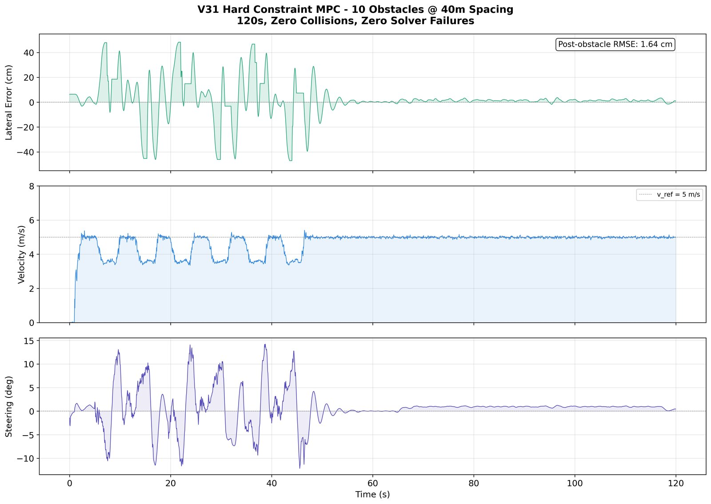
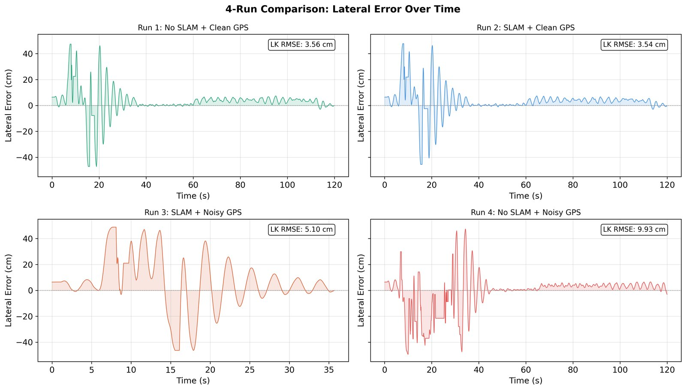
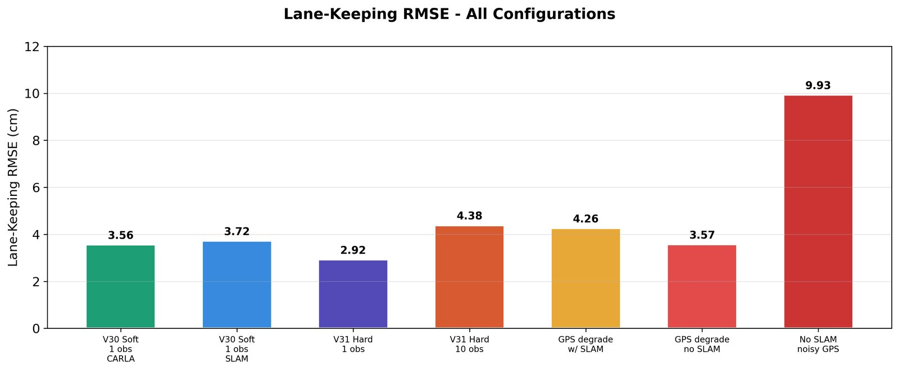

01
What I built
- A lane-keeping MPC that follows the lane center from camera lane detection.
- A hierarchical MPC for obstacle avoidance: 6 overtakes on a 40 m obstacle course with zero collisions, backed by an emergency-braking supervisor.
- Arc-length resampling of the reference path to stop reference stretching, and obstacle constraints that keep the solver feasible.

02
10-obstacle stress test
A 120 s run with ten obstacles spaced 40 m apart, using hard obstacle constraints. The controller slows to about 3.5 m/s for each pass, returns to the 5 m/s reference, and settles back onto the lane center.
0collisions
0solver failures
1.64 cmlateral RMSE after the last obstacle


03
Localization: SLAM and degraded GPS
Four runs compare localization setups. With noisy GPS and no SLAM, lane-keeping error grows to 9.93 cm RMSE. Adding SLAM brings it back to the clean-GPS level.

